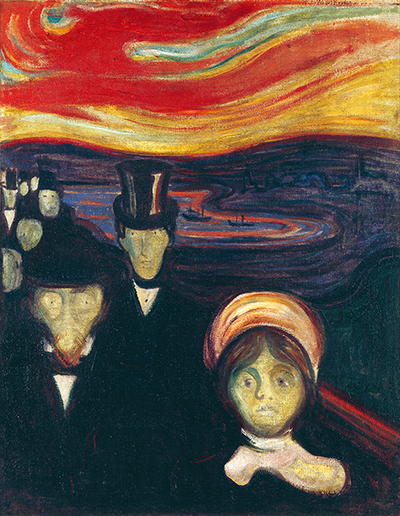

Edvard Munch is best known as being a Norwegian born, expressionist painter, and printer. In the late 20th century, he played a great role in German expressionism, and the art form that later followed; namely because of the strong mental anguish that was displayed in many of the pieces that he created.
A majority of the works which Edvard Munch created, were referred to as the style known as symbolism. This is mainly because of the fact that the the paintings he made focused on the internal view of the objects, as opposed to the exterior, and what the eye could see. Symbolist painters believed that art should reflect an emotion or idea rather than represent the natural world in the objective, quasi-scientific manner embodied by Realism and Impressionism. In painting, Symbolism represents a synthesis of form and feeling, of reality and the artist's inner subjectivity.